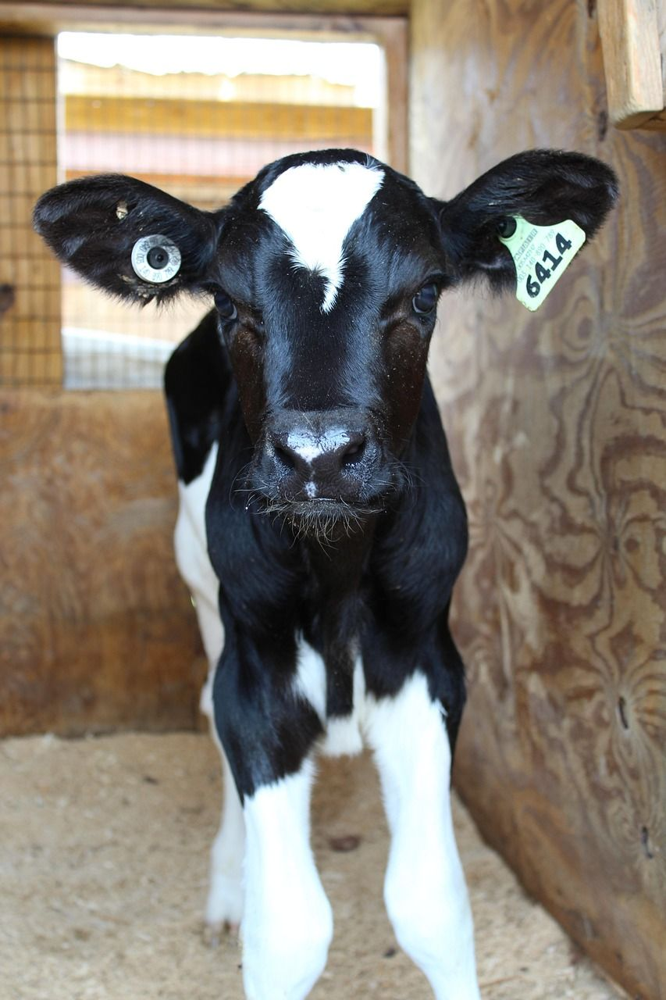
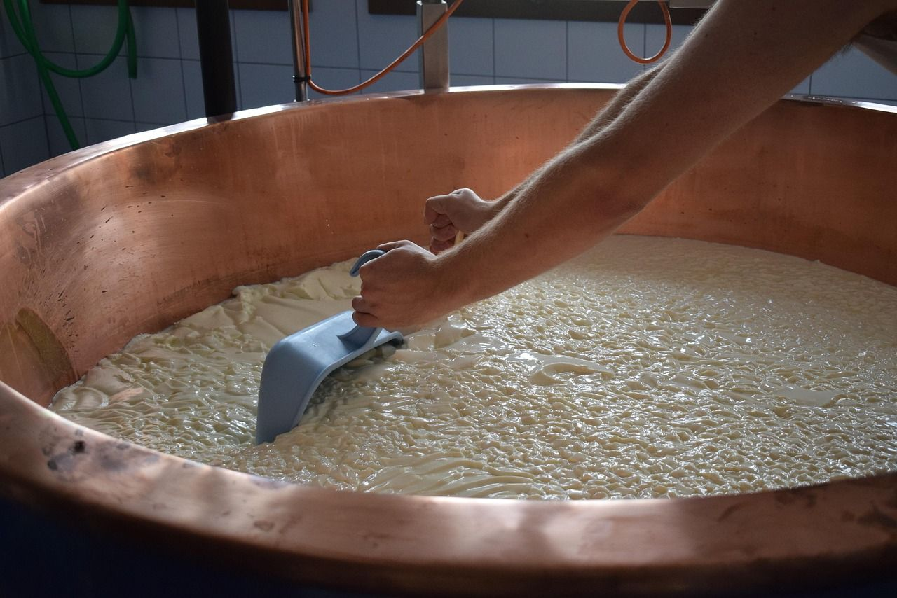
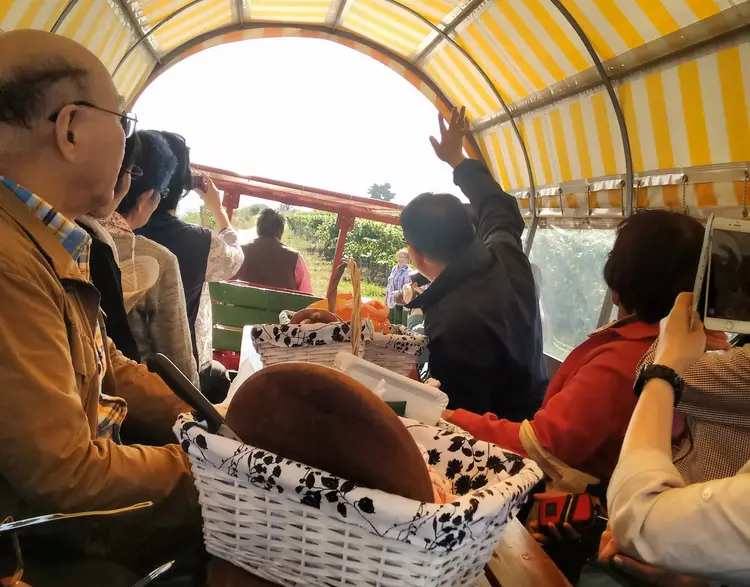

La squadra
Allevatori e veterinari condividono i valori dell’azienda. Monitoriamo costantemente salute e benessere della mandria, intervenendo con tempestività.

Allevatori
Gestione quotidiana della stalla, alimentazione e benessere degli animali.

Veterinari
Controlli sanitari, protocolli e prevenzione per una mandria sana.

Laboratorio
Trasformazione del latte in yogurt e formaggi genuini di alta qualità.

Accoglienza
Fattoria didattica, tour ed eventi per conoscere da vicino il mondo agricolo.